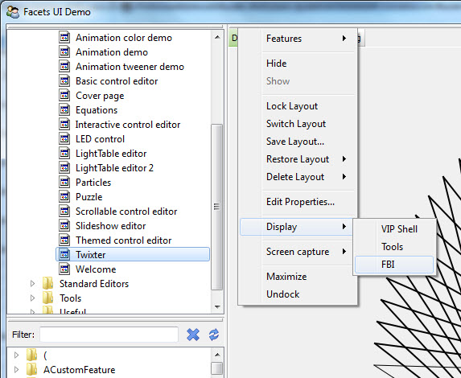
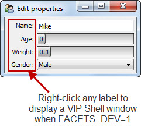

Limitations of the MongoDB OML
Facets defines a number of environment variables that control various aspects of the Facets run-time environment. The next few sections cover the name, value and usage of each of these variables.
Defines the name of the file containing the persistent breakpoints set using the Facets FBI debugger. If not defined, it defaults to a file called fbi.bp located in the Facets configuration directory.
Setting this variable is useful if you are debugging multiple Facets applications and do or do not want them to share the same set of saved breakpoints.
Defines the directory where Facets configuration information, such as the Facets UI database and default persistent breakpoint file, is located. If not defined, Facets uses the following platform specific directory location:
You only need to set this environment variable if you want to keep your application’s Facets configuration data separate from other Facets-based applications on your system.
If you do specify a directory, and it does not exist, Facets automatically creates it when needed. If it exists, but is a file rather than a directory, Facets displays an error message.
Defines the integer valued debug level for application execution. If not defined, the debug level is 0, meaning no debug information is logged. To log debug information, a non-zero value must be set.
The debug level affects the log, log_if, called_from, created_from, object_info, wdump and wdump_if functions defined by the facets.extra.debug module.
The log_if and wdump_if functions define a mask argument which, when logically ANDed with the debug level, must be non- zero for the debug information to be logged, allowing you to conditionally control what information is logged based on the value of FACETS_DEBUG.
Defines a boolean (i.e. 0 or 1) valued flag specifying whether or not developer features are enabled. If not defined, it defaults to 0 (False), indicating developer features are not enabled.
If developer features are enabled, right clicking any DockWindow tab or splitter bar to display its context menu will include a Display sub-menu with options to:
Each of these windows can display additional information about the running state of your application.
In addition, you can also right-click any label in a Facets user interface to display the same VIP Shell window available through the DockWindow context menu:
Defines an integer value specifying if, or how, the Facets FBI (Frame Based Inspector) debugger should be invoked when an application is started. The possible values are:
If not defined, FACETS_FBI defaults to 0, so your application starts normally with no FBI debugger window created.
Note that you can also insert explicit breakpoints into you code using the bp function defined in the facets.extra.helper.fbi module. In this case, the value of the FACETS_FBI variable determines whether or not the FBI debugger is invoked when a breakpoint is encountered.
If FACETS_FBI is 0, any breakpoint encountered is ignored; otherwise the breakpoint suspends execution of the current function and invokes the debugger. This allows you to leave breakpoints in your program code without always invoking the FBI debugger simply by leaving the FACETS_FBI environment variable undefined or set to 0. Setting FACETS_FBI to any non- zero value allows breakpoints to interrupt program execution.
Defines a list of directory paths appended to the default list of paths used by the Facets ImageLibrary. If multiple paths are specified, they must be separated by the standard platform path separator (i.e. ‘;’ on Windows and ‘:’ on Linux and OS X).
The ImageLibrary is a resource manager that helps locate image assets at run- time. Images can be stored in directories or .zip files and their directories added to the ImageLibrary search path to simplify application image retrieval and loading.
Defines how a Facets application’s initial user interface is created. The possible values are:
Create’s the application’s user interface embedded as a tab in a window along with a second tab containing a VIPShell whose namespace is initially populated with all of the values contained in the application object view’s context dictionary. You can use the VIPShell’s Python environment to interactively explore the state of your application while it runs.
This is similar to shell_app, but can reduce screen clutter in cases where your application has a very simple user interface.
If FACETS_INIT is not defined, it defaults to app, which runs your application normally. If the value is not in the above list, an error message is displayed and no application user interface is displayed.
Defines the name of the DockWindow’s theme used for all DockWindows created without specifying an explicit theme. DockWindows manage the tabs and splitter bars used within an application, so setting a theme affects the appearance of those user interface elements within your application.
If FACETS_THEME is not defined, default is used, which is the name of the default DockWindows theme. If an unrecognized theme name is specified, an error message is diplayed, along with a list of all valid DockWindow theme names. If you are not familiar with the available themes, you can also start your application with the FACETS_INIT environment variable set to tools, then create an instance of the Select DockWindow Theme tool and use it to explore how the various available themes look with your application.
Defines the GUI toolkit Facets uses to create all user interface views. The possible values are:
If the environment variable is not defined, Facets automatically searches for the PyQt4, PySide, wxPython or null toolkit, in that order, and uses the first one found. Since the null toolkit is included with the Facets package, the search always succeeds.
You normally only need to set FACETS_UI if more than one GUI toolkit is, or might be, installed and you want to explicitly specify which toolkit to use.